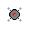

Steuerung
Die Zone verzeiht keine Fehler. Hier ist, wie du deine Knochen zusammenhältst:
- W / A / S / D – Bewegung
- Linksklick – Schießen
- Leertaste – Dash (Ausweichen)
- E – Interagieren
- ESC – Menü / Shop verlassen
- F3 – Debug‑Overlay
Kampf
Die Mutanten hier draußen sind nicht freundlich (oder einfach sehr hungrig). Du schießt mit Linksklick in die Richtung des Mauszeigers.
Jeder Treffer bringt dir Schrott – und Schrott ist Macht. ...MUAHAHAHAH
Gegner
Hier draußen gibt es zwei Arten von Gegnern. Die S.P.I.N.N.E.N. und die Dronen. Beide haben verschiedene Eigenschaften.
Für beide gilt: Fallen ihre HP unter 25% legen sie nochmal richtig an Geschwindigkeit zu!
Die S.P.I.N.N.E.N.
Achtbeinig, elektronisch und definitiv schlechte Laune.

Die S.P.I.N.N.E.N. breiteten sich während der Apocalypse am meisten aus. Aber auch wenn es von ihnen viele gibt, kann man ihnen leicht aus dem weg gehen. Sie laufen einfach nur ihre eigenen Routen durch ihre Terretorien ab. Aber pass auf! Komsmst du ihnen zu nahe, beginnen sie dich so lange zu verfolgen, bis ihnen ihr Terretorium zu weit entfernt ist und sie umkehren.
Die Dronen
Fliegende Ärgernisse. Verfolgen dich auf Schritt und Tritt, aber haben weniger HP.
Die Dronen sind aufgrund ihrer mangelnden Navigationskünste nicht so ausgebreitet, wie die S.P.I.N.N.E.N. Sie verfolgen dich egal wohin du gehst. Halte den Blick, also auch immer in den Himmel gerichtet! Wände sind für die Dronen mehr eine Empfehlung als Fakt.
Dash
Mit der Leertaste machst du einen schnellen Ausweichschritt.
Die Dash‑Anzeige unten zeigt dir, wann du wieder bereit bist.
Pro Tipp: Pass auf, dass du nicht stolperst.
Interaktion
Wenn ein blinkendes E Symbol erscheint, kannst du mit E interagieren.... Macht Sinn oder?
Dazu gehören:
- der Shop
- Start der nächsten Runde
- Rückkehr ins Camp
Mini-Map
Die Mini-Map findest du oben links in deinem Bildschirm. Falls du dich verlaufen solltest, kann sie durchaus hilfreich sein!
Eine Legende:
- Du: Lila
- S.P.I.N.N.E.N.: Rot
- Dronen: Blau
- Fluchtpunkt*: Grün
- (*bzw. genehmigte Zwangsevakuierungs-Endstelle)
Schrott
Schrott ist die Währung der Zone. Du bekommst ihn durch:
- Gegner töten
- Andere Gegner töten
- Wenn du stirbst, verlierst du 1/3 deines Vermögens!
Du brauchst Schrott für Waffenupgrades und neue Waffen.
Waffen & Upgrades
Jede Waffe hat drei Upgrade‑Stufen. Danach schaltest du die nächste Waffenklasse frei.
Kel‑Tec P‑11 (Klasse 1)
Leichte Einsteigerpistole. Schnell, aber schwach.
- Stufe 1: 10 Schaden, 1.20 Speed
- Stufe 2: 12 Schaden, 1.15 Speed
- Stufe 3: 14 Schaden, 1.10 Speed
Glock 19 (Klasse 2)
Solide Dienstpistole. Gute Balance.
- Stufe 1: 16 Schaden, 1.00 Speed
- Stufe 2: 20 Schaden, 0.95 Speed
- Stufe 3: 25 Schaden, 0.90 Speed
Desert Eagle (Klasse 3)
Wenn du etwas wirklich hassen willst – nimm das hier.
- Stufe 1: 30 Schaden, 0.85 Speed
- Stufe 2: 35 Schaden, 0.80 Speed
- Stufe 3: 40 Schaden, 0.75 Speed
Runden & Gegnerentwicklung
Mit jeder Runde werden die Gegner stärker. Sie lernen schnell ... schneller als uns lieb ist.
Plane deine Upgrades, sonst wirst du schneller gefressen, als du „Rinderkennzeichnungsfleischetikettierungsüberwachungsaufgabenübertragungsgesetz“ sagen kannst.
Entwicklung — garantiert KI‑frei™
Dieses Spiel wurde — laut interner Protokolle — vollständig ohne KI entwickelt. Nur echte Finger — echte Tastatur — echte Müdigkeit um 3:47 Uhr.
Wenn du stirbst, war das keine algorithmische Vorhersage — das war einfach Pech (oder menschlicher Trotz).